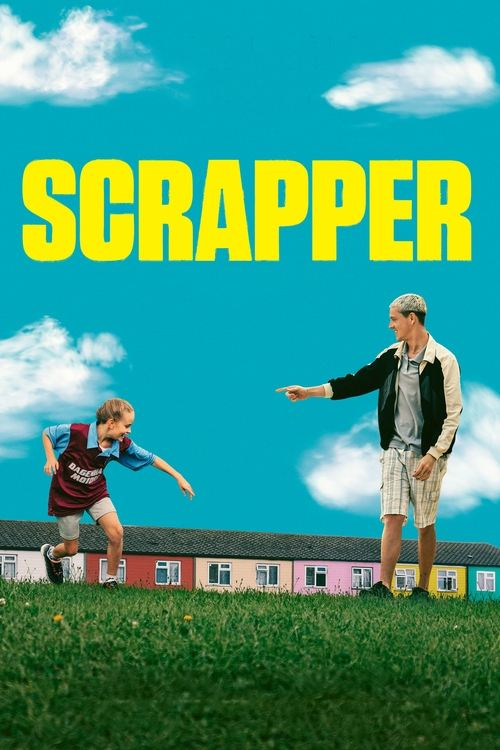
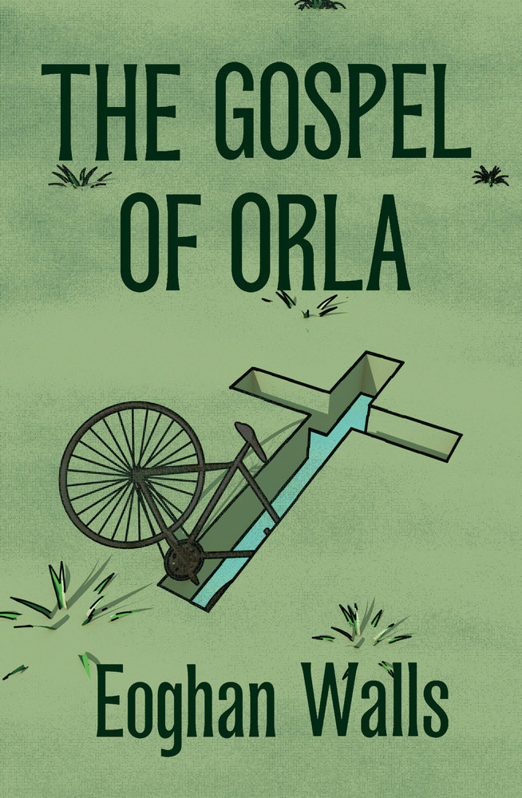
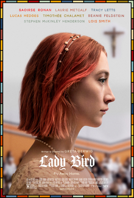
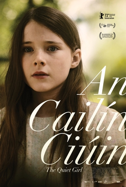
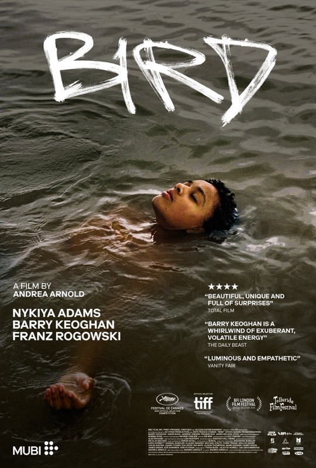
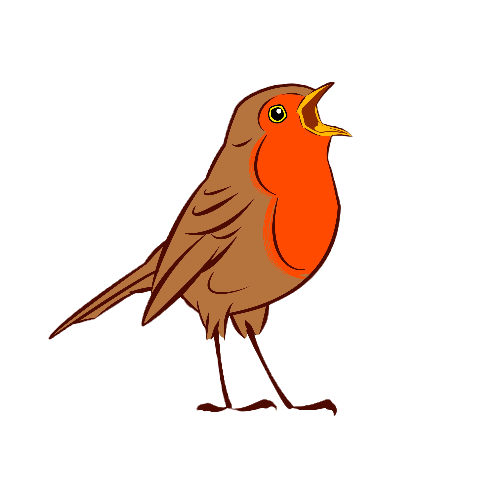

SCRAPPER
Captures the spirited resilience and imaginative defence mechanisms of a fiercely self-reliant young girl navigating the loss of her mother—blending vibrant, offbeat British realism with tender emotional revelation.
After her mother's death, grieving 14-year-old Orla sets off to Northern Ireland with a mysterious stranger who she believes possesses magical powers that can bring her mother back to life.


A journey into the unknown.

A journey into the unknown.

A stranger who may not be what he seems.

You are not alone.

Anger leads to acceptance.
ORLA is set along the cinematic canals, towpaths, and historic streets of Lancaster and the lush Lancashire Countryside. There, our heroine follows the canals through a vibrant landscape on her journey to liberate herself from her overwhelming grief.


A film designed to start conversations and social engagement.
ORLA combines audience appeal with the potential to open meaningful conversations around grief, belonging, displacement and human connection.
The project also offers the potential for an Impact Campaign developed alongside the film’s release. With grief, redemption and the troubled teenage experience at its heart, ORLA creates natural opportunities to engage with wider conversations around young people, loss and connection. The Stranger’s experience of displacement provides a further avenue for meaningful social-impact engagement.
Supporting young people and families dealing with loss.
Creating opportunities to explore belonging, displacement and integration.
Using the film as a starting point for conversations around isolation, grief and emotional resilience.
Encouraging intergenerational conversations around loss and connection.
Blending wondrous magical realism, raw youth perspective, and heartfelt emotional grounding.

Captures the spirited resilience and imaginative defence mechanisms of a fiercely self-reliant young girl navigating the loss of her mother—blending vibrant, offbeat British realism with tender emotional revelation.

Captures the turbulent, fiercely headstrong essence of teenage girlhood and complicated familial love—navigating rebellion, deep emotional yearning, and the aching search for identity and belonging.

A luminous, deeply affecting portrait of childhood isolation and unspoken longing—capturing how quiet observation, patient affection, and rural landscapes can tenderly heal a fractured young heart.

Blends gritty, tactile British realism with lyrical magical transcendence—following a fierce, neglected young girl whose chance encounter with an enigmatic wanderer transforms her world and awakens deep emotional hope.
At the helm is Producer Nancy Garvin, whose passion for developing rich, emotionally complex narratives drives the company's creative vision.
With experience spanning all facets of film production and a sharp eye for story development, Nancy leads with a collaborative, audience-focused approach, partnering with visionary writers, directors and talent to bring meaningful, high-quality films to life.
ORLA marks a powerful next chapter in her mission to produce compelling, emotionally resonant cinema with international appeal.
A filmmaker, producer and editor with more than 20 years’ experience in transnational filmmaking across Iran, Canada, the USA and the UK. Maryam combines creative practice and research to develop socially engaged stories across cultures and borders, with a particular focus on representation and gender.

An award-winning Creative Producer and Director with more than 30 years' experience across film, television, animation and commercial production. Tim brings extensive experience in developing and delivering ambitious creative projects, combining strong storytelling with the practical realities of production.
An accomplished executive programme leader with more than 30 years’ experience across Google, Apple, Microsoft, and startups. Michael brings proven operational discipline to film production, promising investors transparent governance, rigorous schedule management, and uncompromising budget control for ambitious creative visions.

A UK-based independent production company led by producers and directors Isobel Drane and Kieran Lowley, dedicated to ambitious, character-driven storytelling.
Pioneering innovative filmmaking and cutting-edge virtual production technologies, Red Robin Films collaborated with Sony Europe on the landmark production Hestia to push the boundaries of cinematic storytelling.
From page to screen — charting the evolution, production, and release of ORLA.
The Gospel of Orla published.
The story that began it all.
From page toward the screen.
Secured exclusive adaptation rights for Eoghan Walls' acclaimed novel.
Feature adaptation developed.
The novel evolved into a cinematic vision.
ORLA enters production development.
Creative, production and financing foundations take shape.
Building the creative and financial partnerships to bring ORLA into production.
Target production window.
The world of ORLA comes to life.
Target festival & international release.
Taking ORLA to audiences beyond its journey.
Adapted from Eoghan Walls' critically recognised novel, with adaptation rights secured.
Coming-of-age drama meets grounded magical realism.
A story about grief, family, belief and redemption with cross-generational appeal.
A Northern English setting, an Irish literary connection and universal emotional themes.
UK production with opportunities across the UK, US and Canadian markets. Comparable independent films have demonstrated festival, awards, international sales and theatrical potential.
Diversified commercial pathways engineered for international distribution and multi-window monetisation:
Potential to build an impact campaign alongside the commercial release.
Engaging communities around youth bereavement, displacement, and mental wellbeing to drive deeper cultural resonance and sustained audience reach.
"We are thrilled to adapt The Gospel of Orla for the big screen," commented Nancy Garvin, CEO and Producer of Well Produced Films. "Eoghan Walls has created a truly original and cinematic tale. We are honoured to bring it to life as 'Orla'."
"It’s going to be great!" said author Eoghan Walls. "Well Produced Films has a wonderful vision for the project; it will be amazing to see the world of 'Orla' onscreen. I believe in their power to realise the story, and share it with a wider audience."